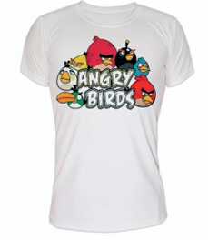

CAMISETA BLANCA
100% Algodón, punto liso, 150g/m2
Tallas: 1-2, 3-4, 5-6, 7-8, 9-10, 11-12
S, M, L, XL, 2XL, 3XL, 4XL

CAMISETA COLOR/NEGRA
100% Algodón, punto liso, 150g/m2
Tallas: 1-2, 3-4, 5-6, 7-8, 9-10, 11-12
S, M, L, XL, 2XL, 3XL, 4XL

IMPRESIÓN DIRECTA
De 70 en adelante consultar
TAMAÑO DE IMPRESIÓN A4
LAS IMPRESIONES A DOS CARAS TIENEN 7€ DE SUPLEMENTO
LAS IMPRESIONES A TAMAÑO A3 TIENEN 3€ DE SUPLEMENTO
LAS CAMISETAS DE MANGA LARGA TIENEN 2,50€ DE SUPLEMENTO
IMPRESIÓN DIRECTA O TRANSFER DIGITAL
TAMAÑO DE IMPRESIÓN A4
LAS IMPRESIONES A DOS CARAS TIENEN 7€ DE SUPLEMENTO
LAS IMPRESIONES A TAMAÑO A3 TIENEN 3€ DE SUPLEMENTO
LAS CAMISETAS DE MANGA LARGA TIENEN 2,50€ DE SUPLEMENTO
CAMISETA BLANCA TÉCNICA TRANSPIRABLE
Camiseta técnica deportiva 100% Poliester. Transpirable.
Tallas: 4, 8, 12, 16, S, M, L, XL, Y, 2XL

CAMISETA COLOR TÉCNICA TRANSPIRABLE
Camiseta técnica deportiva 100% Poliester. Transpirable.
Tallas: 4, 8, 12, 16, S, M, L, XL, Y, 2XL

TAMAÑO IMPRESIÓN A4
LAS IMPRESIONES A DOS CARAS TIENEN 5€ DE SUPLEMENTO
LAS IMPRESIONES EN TAMAÑO A3 TIENEN 2€ DE SUPLEMENTO
BODY BEBE DE MANGA LARGA
BODY BLANCO
BODY NEGRO
MAS COLORES CONSULTAR
Body de manga larga con escote de hombros cruzados. Cierre con botones a presión en la parte infrior. Cuello y bajo ribeado con canalé 1x1.
TEJIDO: 96% algodón peinado / 4% elastano, punto liso, 175 g/m2
TALLAS: 3M - 6M - 9M - 12M -18M.
BODY BEBE DE MANGA CORTA
BODY BLANCO
BODY NEGRO
MAS COLORES CONSULTAR
Body de manga corta con escote de hombros cruzados. Cierre con botones a presión en la parte infrior. Cuello y bajo ribeado con canalé 1x1.
TEJIDO: 96% algodón peinado / 4% elastano, punto liso, 175 g/m2
TALLAS: 3M - 6M - 9M - 12M -18M.
BABERO BEBE
TALLAS DE 0 A 6 MESES Y DE 6 A 18 MESES
Material parte delantera: microfibra, 100% poliéster
Material parte trasera: toalla de rizo
Colores disponibles: blanco
Ribete de color blanco
Impresión en la totalidad del babero
Se pueden lavar asegurando que la impresión dure con el paso del tiempo.
Tamaño 20 x 18 cm